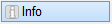
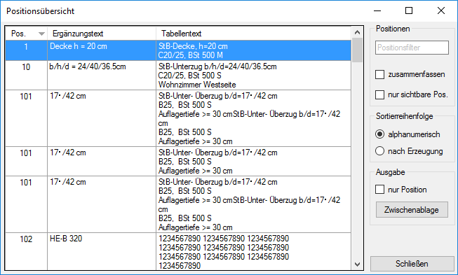

")
")
Liste der statischen Positionen mit Positionsnummern, Ergänzungs- und Tabellentexten.
Öffnet den Dialog Positionsübersicht mit einer Zusammenstellung aller in der Zeichnung enthaltenen statischen Positionen und diesen zugeordneten Ergänzungs- und Tabellentexten.
·Die in der Liste markierte Position wird in der Zeichnung mit den definierten Eigenschaften dargestellt, alle anderen Zeichenelemente werden entsprechend der Farbe für Elemente im Hintergrund angezeigt.
·Die Positionsübersicht kann vor der Ausgabe auf Positionsnummern gefiltert und zusammengefasst werden. Die Ausgabe erfolgt in die Windows®-Zwischenablage.
Optionen im Dialog "Positionsübersicht"
 |
Positionen
Positionsfilter Suche nach bestimmten Positionen. Hier können Sie den vollständigen oder partiellen Positionstext angeben. Mit dem folgenden Platzhalterzeichen können Sie Ihre Suche erweitern: * (Sternchen): Steht für eine beliebige Zeichenfolge und kann an jeder Stelle der Suchzeichenfolge verwendet werden. Beispiel: Die Eingabe A*C könnte zu diesen Suchergebnissen führen - A1C, A4C, A5C2 usw. zusammenfassen
nur sichtbare Pos.
|

Sortierreihenfolge
Sie können die Positionen entweder absteigend [] oder aufsteigend [] sortieren. Klicken Sie auf den Pfeil, um die Sortierreihenfolge zu ändern. alphanumerisch Bei der alphanumerischen Sortierung gilt folgende Sortierreihenfolge: 1.Satzzeichen 2.Ziffern 3.Buchstaben (Großbuchstaben vor Kleinbuchstaben bei absteigender [] Sortierung) nach Erzeugung Positionen werden nach dem Erstellungszeitpunkt sortiert (von der ältesten [] zur aktuellsten oder der aktuellsten [] zur ältesten). |
Ausgabe
nur Position
Zwischenablage Die Positionsübersicht wird in die Windows®-Zwischenablage kopiert. Sie können die Positionsübersicht in ein anderes Programm übernehmen (z. B. Word, Excel). |

Schließen
Schließt die Positionsübersicht. Alle Änderungen, Filter- und Sortierkriterien werden zurückgesetzt.
Siehe auch:
·Positionstabelle anlegen oder aktualisieren
Zugehörige Referenzen: